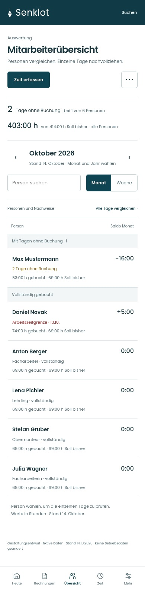
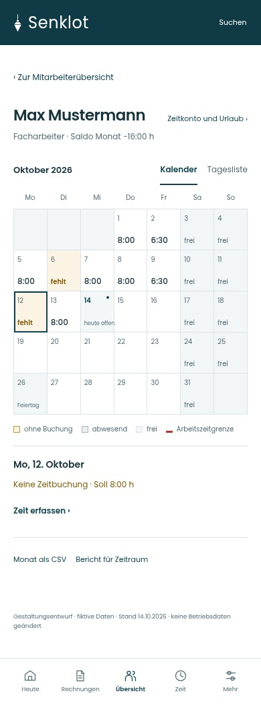

SENKLOT · LOT V2 · ENTWURF 09
Kompakte Übersicht mit Salden. Monatskalender und Tagesliste als eigene, gut lesbare Ansicht.


Fiktive Daten · Konzept ohne Backend · die bestehende App ist unverändert.